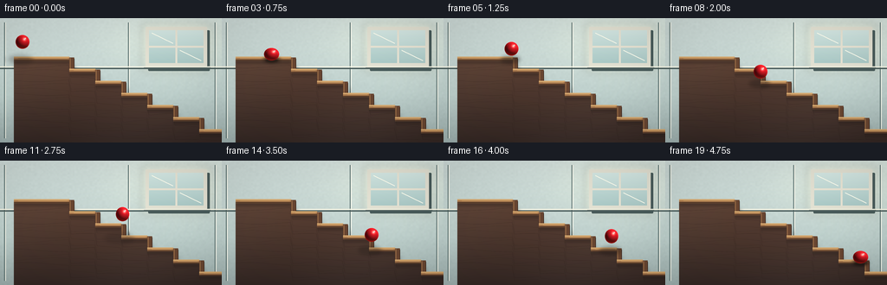
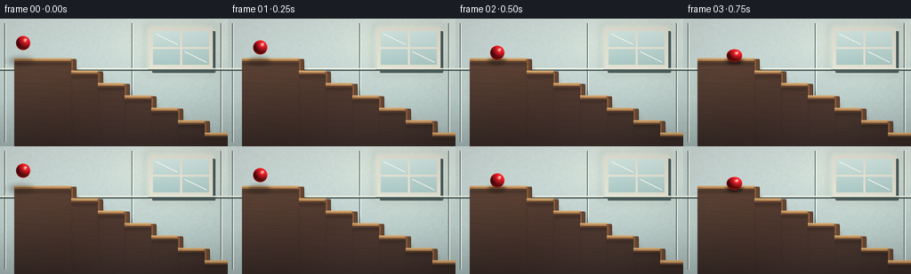
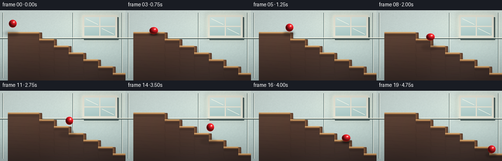

CODING AGENTS AS PIXEL WORLD MODELS
traex/DeepSeek-V4.1-Flash · instance_preservation_0021
点击播放 · 原生 RGB 像素
逐轮保存的候选
回放视频、检查图与代码变化。
每份候选均可单独播放。实际图片检查记录在下方工具轨迹中。
候选 01播放与检查图
点击播放 · 原生 RGB 像素


展开代码变化
--- 上一保存版本
+++ 本次保存版本
@@ -0,0 +1,386 @@
+"""Procedurally render a glossy red ball bouncing down a staircase."""
+
+from pathlib import Path
+import math
+
+import numpy as np
+from PIL import Image, ImageDraw, ImageFilter
+
+import artifact_io
+
+
+WIDTH = 256
+HEIGHT = 144
+FPS = 4.0
+FRAME_COUNT = 20
+SCALE = 4
+W = WIDTH * SCALE
+H = HEIGHT * SCALE
+RNG = np.random.default_rng(2107)
+
+# Stair profile in final-image pixels. The first long run is the upper landing.
+STEPS = (
+ (16, 80, 49),
+ (80, 110, 63),
+ (110, 140, 77),
+ (140, 170, 91),
+ (170, 200, 105),
+ (200, 230, 119),
+ (230, 300, 133),
+)
+
+X_POSITIONS = [26.0 + 10.5 * i for i in range(FRAME_COUNT)]
+Y_POSITIONS = [
+ 27.5, 32.5, 38.5, 41.8, 33.5,
+ 35.5, 44.0, 53.0, 62.0, 67.0,
+ 69.5, 62.0, 61.0, 73.0, 86.0,
+ 97.5, 87.5, 85.0, 99.0, 111.8,
+]
+SQUASH_X = [
+ 1.00, 1.00, 1.00, 1.08, 0.97,
+ 1.00, 1.00, 1.00, 1.00, 1.00,
+ 1.05, 0.98, 1.00, 1.00, 1.00,
+ 1.05, 0.98, 1.00, 1.00, 1.08,
+]
+SQUASH_Y = [
+ 1.00, 1.00, 1.00, 0.90, 1.04,
+ 1.00, 1.00, 1.00, 1.00, 1.00,
+ 0.94, 1.03, 1.00, 1.00, 1.00,
+ 0.94, 1.03, 1.00, 1.00, 0.90,
+]
+
+
+def px(value):
+ return int(round(value * SCALE))
+
+
+def surface_y(x):
+ for left, right, y in STEPS:
+ if left <= x < right:
+ return y
+ return STEPS[-1][2] if x >= STEPS[-1][0] else STEPS[0][2]
+
+
+def stair_outline(offset_x=0.0, offset_y=0.0):
+ points = []
+ for left, right, y in STEPS:
+ points.extend(((left + offset_x, y + offset_y),
+ (right + offset_x, y + offset_y)))
+ points.extend(((WIDTH + offset_x, HEIGHT + offset_y),
+ (STEPS[0][0] + offset_x, HEIGHT + offset_y)))
+ return [(px(x), px(y)) for x, y in points]
+
+
+def blur_layer(size, radius):
+ return Image.new("RGBA", size, (0, 0, 0, 0)).filter(
+ ImageFilter.GaussianBlur(radius * SCALE)
+ )
+
+
+def make_background():
+ """Paint the softly lit interior, before the staircase is composited."""
+ yy = np.linspace(0.0, 1.0, H, dtype=np.float32)[:, None, None]
+ top = np.array([207, 221, 218], dtype=np.float32)
+ middle = np.array([188, 207, 204], dtype=np.float32)
+ bottom = np.array([158, 177, 176], dtype=np.float32)
+ blend = np.clip(yy / 0.62, 0.0, 1.0)
+ wall = top * (1.0 - blend) + middle * blend
+ lower_blend = np.clip((yy - 0.62) / 0.38, 0.0, 1.0)
+ wall = wall * (1.0 - lower_blend) + bottom * lower_blend
+ wall = np.broadcast_to(wall, (H, W, 3)).copy()
+
+ xx = np.linspace(0.0, 1.0, W, dtype=np.float32)[None, :, None]
+ yyf = np.linspace(0.0, 1.0, H, dtype=np.float32)[:, None, None]
+ window_glow = np.exp(
+ -((xx - 0.80) ** 2 / 0.075 + (yyf - 0.19) ** 2 / 0.060)
+ )
+ wall += window_glow * np.array([22.0, 20.0, 12.0], dtype=np.float32)
+
+ # A very restrained plaster grain keeps the broad wall from looking flat.
+ noise = RNG.normal(0.0, 1.0, (HEIGHT // 2, WIDTH // 2)).astype(np.float32)
+ noise_img = Image.fromarray(
+ np.clip(noise * 24.0 + 128.0, 0, 255).astype(np.uint8), "L"
+ ).resize((W, H), Image.Resampling.BICUBIC)
+ noise_arr = np.asarray(noise_img, dtype=np.float32)[:, :, None] - 128.0
+ wall += noise_arr * 0.055
+ return Image.fromarray(np.clip(wall, 0, 255).astype(np.uint8), "RGB").convert("RGBA")
+
+
+def draw_window(canvas):
+ draw = ImageDraw.Draw(canvas, "RGBA")
+ x0, y0, x1, y1 = 168, 10, 239, 56
+ glow = Image.new("RGBA", canvas.size, (0, 0, 0, 0))
+ gd = ImageDraw.Draw(glow)
+ gd.rounded_rectangle(
+ (px(x0 - 5), px(y0 - 4), px(x1 + 5), px(y1 + 7)),
+ radius=px(3),
+ fill=(255, 244, 207, 45),
+ )
+ canvas.alpha_composite(glow.filter(ImageFilter.GaussianBlur(px(4))))
+
+ draw.rounded_rectangle(
+ (px(x0 + 3), px(y0 + 4), px(x1 + 3), px(y1 + 5)),
+ radius=px(1.2),
+ fill=(72, 91, 91, 65),
+ )
+ draw.rounded_rectangle(
+ (px(x0), px(y0), px(x1), px(y1)),
+ radius=px(1.2),
+ fill=(226, 225, 211, 255),
+ )
+
+ pane_left, pane_top = x0 + 4, y0 + 4
+ pane_right, pane_bottom = x1 - 4, y1 - 4
+ pane = Image.new("RGBA", (px(pane_right - pane_left), px(pane_bottom - pane_top)))
+ pa = np.zeros((pane.height, pane.width, 4), dtype=np.uint8)
+ py = np.linspace(0.0, 1.0, pane.height, dtype=np.float32)[:, None]
+ pcol = (
+ np.array([212, 232, 228], dtype=np.float32) * (1.0 - py[:, :, None])
+ + np.array([170, 201, 199], dtype=np.float32) * py[:, :, None]
+ )
+ pa[:, :, :3] = np.clip(pcol, 0, 255).astype(np.uint8)
+ pa[:, :, 3] = 255
+ pane = Image.fromarray(pa, "RGBA")
+ canvas.alpha_composite(pane, (px(pane_left), px(pane_top)))
+
+ # Slim cream muntins and a warm reflected edge on each pane.
+ mid_x = (pane_left + pane_right) / 2
+ mid_y = (pane_top + pane_bottom) / 2
+ draw.rectangle((px(mid_x - 1.0), px(pane_top), px(mid_x + 1.0), px(pane_bottom)),
+ fill=(231, 228, 213, 255))
+ draw.rectangle((px(pane_left), px(mid_y - 1.0), px(pane_right), px(mid_y + 1.0)),
+ fill=(231, 228, 213, 255))
+ draw.line((px(pane_left + 3), px(pane_top + 3), px(mid_x - 4), px(mid_y - 4)),
+ fill=(255, 255, 239, 85), width=px(1))
+ draw.line((px(mid_x + 4), px(mid_y + 4), px(pane_right - 3), px(pane_bottom - 3)),
+ fill=(255, 255, 239, 55), width=px(1))
+ draw.line((px(x0 - 2), px(y1 + 1), px(x1 + 4), px(y1 + 1)),
+ fill=(120, 132, 128, 80), width=px(1.4))
+
+
+def draw_wall_details(canvas):
+ draw = ImageDraw.Draw(canvas, "RGBA")
+
+ # Quiet panel seams and the chair-rail shadow establish the room scale.
+ for x in (5, 148, 248):
+ draw.line((px(x), px(5), px(x), px(139)),
+ fill=(91, 114, 113, 30), width=px(1))
+ draw.line((px(x + 1.2), px(5), px(x + 1.2), px(139)),
+ fill=(244, 246, 235, 30), width=px(1))
+ draw.line((0, px(58), W, px(58)), fill=(72, 91, 90, 62), width=px(1.4))
+ draw.line((0, px(56.2), W, px(56.2)), fill=(242, 242, 226, 100), width=px(1.2))
+
+
+def draw_staircase(canvas):
+ # A soft offset shadow makes the staircase sit in front of the wall.
+ shadow = Image.new("RGBA", canvas.size, (0, 0, 0, 0))
+ sd = ImageDraw.Draw(shadow)
+ sd.polygon(stair_outline(4.2, 5.0), fill=(37, 33, 29, 105))
+ shadow = shadow.filter(ImageFilter.GaussianBlur(px(3.1)))
+ canvas.alpha_composite(shadow)
+
+ mask = Image.new("L", canvas.size, 0)
+ md = ImageDraw.Draw(mask)
+ md.polygon(stair_outline(), fill=255)
+
+ y = np.arange(H, dtype=np.float32)[:, None, None]
+ t = np.clip((y - px(45)) / (H - px(45)), 0.0, 1.0)
+ side_top = np.array([92, 65, 52], dtype=np.float32)
+ side_bottom = np.array([51, 39, 36], dtype=np.float32)
+ side = side_top * (1.0 - t) + side_bottom * t
+ side = np.broadcast_to(side, (H, W, 3)).copy()
+
+ # Broad diagonal light bands add volume to the solid stair stringer.
+ xx = np.linspace(0.0, 1.0, W, dtype=np.float32)[None, :, None]
+ side += (0.5 + 0.5 * np.sin(xx * 8.0 + y / px(48))) * 4.5
+ side_img = Image.fromarray(np.clip(side, 0, 255).astype(np.uint8), "RGB")
+ canvas.paste(side_img, (0, 0), mask)
+
+ grain = Image.new("RGBA", canvas.size, (0, 0, 0, 0))
+ gd = ImageDraw.Draw(grain)
+ for line_index in range(14):
+ points = []
+ phase = line_index * 1.83
+ for x in range(10, 266, 3):
+ sy = surface_y(x)
+ gy = sy + 7.0 + line_index * 5.3
+ gy += 1.7 * math.sin(x * 0.055 + phase)
+ if gy < HEIGHT - 1:
+ points.append((px(x), px(gy)))
+ if len(points) > 1:
+ shade = 25 if line_index % 3 else 42
+ gd.line(points, fill=(34, 23, 20, shade), width=px(0.75))
+ grain_arr = np.array(grain)
+ grain_arr[:, :, 3] = (
+ grain_arr[:, :, 3].astype(np.uint16)
+ * np.asarray(mask, dtype=np.uint16) // 255
+ ).astype(np.uint8)
+ canvas.alpha_composite(Image.fromarray(grain_arr, "RGBA"))
+
+ draw = ImageDraw.Draw(canvas, "RGBA")
+ previous_y = STEPS[0][2]
+ for left, right, step_y in STEPS:
+ if left > STEPS[0][0]:
+ # Vertical riser face, inset from the stair edge for a solid profile.
+ draw.rectangle(
+ (px(left), px(previous_y - 3.5), px(left + 5.5), px(step_y)),
+ fill=(103, 69, 49, 255),
+ )
+ draw.line(
+ (px(left + 1.0), px(previous_y - 3.0), px(left + 1.0), px(step_y - 1.0)),
+ fill=(164, 119, 77, 185), width=px(0.8),
+ )
+ draw.line(
+ (px(left + 5.5), px(previous_y - 2.0), px(left + 5.5), px(step_y - 1.0)),
+ fill=(63, 42, 33, 180), width=px(0.8),
+ )
+
+ # Lit tread top with a narrow bevel and a dark shadowed nosing.
+ draw.rectangle(
+ (px(left), px(step_y - 4.4), px(right), px(step_y)),
+ fill=(171, 123, 79, 255),
+ )
+ draw.rectangle(
+ (px(left), px(step_y - 4.4), px(right), px(step_y - 3.2)),
+ fill=(213, 169, 112, 255),
+ )
+ draw.line(
+ (px(left), px(step_y - 0.8), px(right), px(step_y - 0.8)),
+ fill=(82, 55, 40, 220), width=px(1.1),
+ )
+ draw.line(
+ (px(left + 5), px(step_y - 2.5), px(right - 2), px(step_y - 2.5)),
+ fill=(194, 148, 95, 85), width=px(0.65),
+ )
+
+ # A short, soft occlusion band under every projecting nosing.
+ ao = Image.new("RGBA", canvas.size, (0, 0, 0, 0))
+ ad = ImageDraw.Draw(ao)
+ ad.rectangle(
+ (px(left + 1), px(step_y), px(right), px(step_y + 3.2)),
+ fill=(42, 31, 27, 88),
+ )
+ canvas.alpha_composite(ao.filter(ImageFilter.GaussianBlur(px(1.3))))
+ previous_y = step_y
+
+
+def draw_shadow(canvas, cx, cy, radius_x, radius_y):
+ floor_y = surface_y(cx)
+ gap = max(0.0, floor_y - (cy + radius_y))
+ spread = 1.0 + gap / 23.0
+ opacity = int(126.0 * math.exp(-gap / 16.0) + 16.0)
+
+ shadow = Image.new("RGBA", canvas.size, (0, 0, 0, 0))
+ sd = ImageDraw.Draw(shadow)
+ sx = cx - min(4.0, gap * 0.18)
+ sy = floor_y - 1.2
+ rx = radius_x * 1.10 * spread
+ ry = (3.4 + gap * 0.085) * (0.85 + spread * 0.15)
+ sd.ellipse(
+ (px(sx - rx), px(sy - ry), px(sx + rx), px(sy + ry)),
+ fill=(34, 27, 24, opacity),
+ )
+ canvas.alpha_composite(shadow.filter(ImageFilter.GaussianBlur(px(2.0 + gap / 35.0))))
+
+ # A small, tighter contact lobe appears whenever the ball meets a tread.
+ if gap < 2.5:
+ contact = Image.new("RGBA", canvas.size, (0, 0, 0, 0))
+ cd = ImageDraw.Draw(contact)
+ cd.ellipse(
+ (px(cx - radius_x * 0.82), px(floor_y - 2.2),
+ px(cx + radius_x * 0.82), px(floor_y + 1.7)),
+ fill=(28, 20, 18, 145),
+ )
+ canvas.alpha_composite(contact.filter(ImageFilter.GaussianBlur(px(1.0))))
+
+
+def draw_ball(canvas, cx, cy, sx, sy):
+ radius = 8.0
+ rx = radius * sx
+ ry = radius * sy
+ x0 = int(math.floor(px(cx - rx)))
+ x1 = int(math.ceil(px(cx + rx))) + 1
+ y0 = int(math.floor(px(cy - ry)))
+ y1 = int(math.ceil(px(cy + ry))) + 1
+ x0, y0 = max(0, x0), max(0, y0)
+ x1, y1 = min(W, x1), min(H, y1)
+
+ yy, xx = np.mgrid[y0:y1, x0:x1].astype(np.float32)
+ qx = (xx + 0.5 - px(cx)) / px(rx)
+ qy = (yy + 0.5 - px(cy)) / px(ry)
+ rr = qx * qx + qy * qy
+ inside = rr <= 1.0
+ nz = np.sqrt(np.clip(1.0 - rr, 0.0, 1.0))
+
+ light = np.array([0.54, -0.70, 0.47], dtype=np.float32)
+ light /= np.linalg.norm(light)
+ ndl = np.clip(qx * light[0] + qy * light[1] + nz * light[2], 0.0, 1.0)
+ diffuse = 0.25 + 0.86 * ndl
+ base = np.array([224.0, 30.0, 39.0], dtype=np.float32)
+ color = base[None, None, :] * diffuse[:, :, None]
+
+ # Darker outer falloff and a warm red bounce from the wooden tread.
+ color += np.array([105.0, 5.0, 8.0], dtype=np.float32)[None, None, :] * (
+ (1.0 - nz) ** 2
+ )[:, :, None]
+ color += np.array([44.0, 11.0, 4.0], dtype=np.float32)[None, None, :] * (
+ np.clip(qy, 0.0, 1.0) ** 2
+ )[:, :, None]
+
+ # Two soft speculars sell the glossy painted surface without adding detail.
+ spec_main = np.exp(-(((qx - 0.28) / 0.20) ** 2 + ((qy + 0.39) / 0.20) ** 2))
+ spec_fine = np.exp(-(((qx - 0.43) / 0.075) ** 2 + ((qy + 0.52) / 0.075) ** 2))
+ specular = 205.0 * spec_main + 190.0 * spec_fine
+ color += specular[:, :, None] * np.array([1.0, 0.93, 0.82], dtype=np.float32)
+
+ # Slightly luminous edge keeps the silhouette legible against dark treads.
+ rim = np.clip((nz - 0.72) / 0.28, 0.0, 1.0)
+ color += rim[:, :, None] * np.array([43.0, 4.0, 7.0], dtype=np.float32)
+
+ alpha = np.where(inside, 255, 0).astype(np.uint8)
+ rgba = np.dstack((
+ np.clip(color, 0, 255).astype(np.uint8),
+ alpha,
+ ))
+ canvas.alpha_composite(Image.fromarray(rgba, "RGBA"), (x0, y0))
+
+
+def finish_frame(canvas):
+ image = canvas.convert("RGB").resize((WIDTH, HEIGHT), Image.Resampling.LANCZOS)
+ arr = np.asarray(image, dtype=np.float32)
+
+ yy = np.linspace(-1.0, 1.0, HEIGHT, dtype=np.float32)[:, None, None]
+ xx = np.linspace(-1.0, 1.0, WIDTH, dtype=np.float32)[None, :, None]
+ vignette = 1.0 - 0.095 * np.clip((xx * xx * 0.62 + yy * yy * 0.72) - 0.10, 0, 1)
+ arr *= vignette
+
+ # Subtle warm highlights and cool shadows make the palette feel photographed.
+ arr[:, :, 0] += 1.4
+ arr[:, :, 1] += 0.7
+ return np.clip(arr, 0, 255).astype(np.uint8)
+
+
+def main():
+ case_dir = Path(__file__).resolve().parent
+ background = make_background()
+ draw_window(background)
+ draw_wall_details(background)
+ draw_staircase(background)
+
+ frames = []
+ for frame_index in range(FRAME_COUNT):
+ canvas = background.copy()
+ cx = X_POSITIONS[frame_index]
+ cy = Y_POSITIONS[frame_index]
+ sx = SQUASH_X[frame_index]
+ sy = SQUASH_Y[frame_index]
+ draw_shadow(canvas, cx, cy, 8.0 * sx, 8.0 * sy)
+ draw_ball(canvas, cx, cy, sx, sy)
+ frames.append(finish_frame(canvas))
+
+ artifact_io.save(frames, case_dir)
+ print(f"Rendered {len(frames)} frames to {case_dir}")
+
+
+if __name__ == "__main__":
+ main()
候选 02播放与检查图
点击播放 · 原生 RGB 像素
展开代码变化
--- 上一保存版本
+++ 本次保存版本
@@ -32,21 +32,21 @@
X_POSITIONS = [26.0 + 10.5 * i for i in range(FRAME_COUNT)]
Y_POSITIONS = [
27.5, 32.5, 38.5, 41.8, 33.5,
- 35.5, 44.0, 53.0, 62.0, 67.0,
- 69.5, 62.0, 61.0, 73.0, 86.0,
- 97.5, 87.5, 85.0, 99.0, 111.8,
+ 35.5, 44.0, 53.0, 54.8, 66.0,
+ 68.8, 61.5, 73.0, 81.8, 75.0,
+ 90.0, 96.8, 104.0, 110.8, 120.0,
]
SQUASH_X = [
1.00, 1.00, 1.00, 1.08, 0.97,
- 1.00, 1.00, 1.00, 1.00, 1.00,
- 1.05, 0.98, 1.00, 1.00, 1.00,
- 1.05, 0.98, 1.00, 1.00, 1.08,
+ 1.00, 1.00, 1.00, 1.08, 0.98,
+ 1.08, 0.97, 1.00, 1.08, 0.97,
+ 1.00, 1.08, 0.98, 1.08, 1.00,
]
SQUASH_Y = [
1.00, 1.00, 1.00, 0.90, 1.04,
- 1.00, 1.00, 1.00, 1.00, 1.00,
- 0.94, 1.03, 1.00, 1.00, 1.00,
- 0.94, 1.03, 1.00, 1.00, 0.90,
+ 1.00, 1.00, 1.00, 0.90, 1.03,
+ 0.90, 1.04, 1.00, 0.90, 1.04,
+ 1.00, 0.90, 1.03, 0.90, 1.00,
]
@@ -99,11 +99,11 @@
# A very restrained plaster grain keeps the broad wall from looking flat.
noise = RNG.normal(0.0, 1.0, (HEIGHT // 2, WIDTH // 2)).astype(np.float32)
noise_img = Image.fromarray(
- np.clip(noise * 24.0 + 128.0, 0, 255).astype(np.uint8), "L"
+ np.clip(noise * 24.0 + 128.0, 0, 255).astype(np.uint8)
).resize((W, H), Image.Resampling.BICUBIC)
noise_arr = np.asarray(noise_img, dtype=np.float32)[:, :, None] - 128.0
wall += noise_arr * 0.055
- return Image.fromarray(np.clip(wall, 0, 255).astype(np.uint8), "RGB").convert("RGBA")
+ return Image.fromarray(np.clip(wall, 0, 255).astype(np.uint8)).convert("RGBA")
def draw_window(canvas):
@@ -140,7 +140,7 @@
)
pa[:, :, :3] = np.clip(pcol, 0, 255).astype(np.uint8)
pa[:, :, 3] = 255
- pane = Image.fromarray(pa, "RGBA")
+ pane = Image.fromarray(pa)
canvas.alpha_composite(pane, (px(pane_left), px(pane_top)))
# Slim cream muntins and a warm reflected edge on each pane.
@@ -193,7 +193,7 @@
# Broad diagonal light bands add volume to the solid stair stringer.
xx = np.linspace(0.0, 1.0, W, dtype=np.float32)[None, :, None]
side += (0.5 + 0.5 * np.sin(xx * 8.0 + y / px(48))) * 4.5
- side_img = Image.fromarray(np.clip(side, 0, 255).astype(np.uint8), "RGB")
+ side_img = Image.fromarray(np.clip(side, 0, 255).astype(np.uint8))
canvas.paste(side_img, (0, 0), mask)
grain = Image.new("RGBA", canvas.size, (0, 0, 0, 0))
@@ -215,7 +215,7 @@
grain_arr[:, :, 3].astype(np.uint16)
* np.asarray(mask, dtype=np.uint16) // 255
).astype(np.uint8)
- canvas.alpha_composite(Image.fromarray(grain_arr, "RGBA"))
+ canvas.alpha_composite(Image.fromarray(grain_arr))
draw = ImageDraw.Draw(canvas, "RGBA")
previous_y = STEPS[0][2]
@@ -342,7 +342,7 @@
np.clip(color, 0, 255).astype(np.uint8),
alpha,
))
- canvas.alpha_composite(Image.fromarray(rgba, "RGBA"), (x0, y0))
+ canvas.alpha_composite(Image.fromarray(rgba), (x0, y0))
def finish_frame(canvas):
候选 03播放与检查图
候选 04播放与检查图
点击播放 · 原生 RGB 像素

展开代码变化
--- 上一保存版本
+++ 本次保存版本
@@ -30,6 +30,7 @@
)
X_POSITIONS = [26.0 + 10.5 * i for i in range(FRAME_COUNT)]
+X_POSITIONS[-2:] = [220.0, 235.0]
Y_POSITIONS = [
27.5, 32.5, 38.5, 41.8, 33.5,
35.5, 44.0, 53.0, 54.8, 66.0,
候选 05播放与检查图
点击播放 · 原生 RGB 像素

展开代码变化
--- 上一保存版本
+++ 本次保存版本
@@ -3,6 +3,7 @@
from pathlib import Path
import math
+import av
import numpy as np
from PIL import Image, ImageDraw, ImageFilter
@@ -361,6 +362,21 @@
return np.clip(arr, 0, 255).astype(np.uint8)
+def encode_video(frames, path):
+ with av.open(str(path), "w") as output:
+ stream = output.add_stream("libx264", rate=int(FPS))
+ stream.width = WIDTH
+ stream.height = HEIGHT
+ stream.pix_fmt = "yuv420p"
+ stream.options = {"crf": "15", "preset": "slow", "tune": "animation"}
+ for array in frames:
+ video_frame = av.VideoFrame.from_ndarray(array, format="rgb24")
+ for packet in stream.encode(video_frame):
+ output.mux(packet)
+ for packet in stream.encode():
+ output.mux(packet)
+
+
def main():
case_dir = Path(__file__).resolve().parent
background = make_background()
@@ -380,6 +396,7 @@
frames.append(finish_frame(canvas))
artifact_io.save(frames, case_dir)
+ encode_video(frames, case_dir / "red_ball_stairs.mp4")
print(f"Rendered {len(frames)} frames to {case_dir}")
可观测工具轨迹
实际执行的命令与返回图片。
命令 1exit 0
/bin/bash -c "pwd && rg --files -g 'prompt.txt' -g 'GENERATION_RULES.md' -g 'task_spec.json' -g '"'!**/.git/**'"'"
命令 2exit 0
/bin/bash -c 'ls -la'
命令 3exit 0
/bin/bash -c 'cat prompt.txt'
命令 4exit 0
/bin/bash -c 'cat GENERATION_RULES.md'
命令 5exit 0
/bin/bash -c 'cat task_spec.json'
命令 6exit 0
/bin/bash -c "sed -n '1,240p' artifact_io.py"
命令 7exit 0
/bin/bash -c "python - <<'PY'
import PIL, numpy
print('Pillow', PIL.__version__)
print('numpy', numpy.__version__)
PY
command -v ffmpeg || true"命令 8exit 0
/bin/bash -c "python - <<'PY'
# quick trajectory experiment
x=26.; y=32.; vx=37.; vy=2.; g=150.; r=8.; dt=1/600
steps=[(18,80,49),(80,110,63),(110,140,77),(140,170,91),(170,200,105),(200,230,119),(230,300,133)]
def floor(x):
for a,b,y0 in steps:
if a<=x<b:return y0
return 133
for f in range(20):
t=f/4
print(f,t,round(x,1),round(y,1),round(floor(x)-r,1), 'air',round(floor(x)-r-y,1))
for i in range(150):
x+=vx*dt; vy+=g*dt; y+=vy*dt
fl=floor(x)-r
if y>=fl and vy>0:
y=fl; vy=-vy*0.72
PY"命令 9exit 0
/bin/bash -c "python - <<'PY'
from PIL import Image
im=Image.new('RGB',(10,10)); print(im.resize((5,5),Image.Resampling.LANCZOS).size)
PY"命令 10exit 1
/bin/bash -c 'python generate.py'
命令 11exit 0
/bin/bash -c 'python generate.py'
命令 12exit 0
/bin/bash -c 'command -v chafa || true; command -v viu || true; command -v img2txt || true; command -v jp2 || true'
命令 13exit 0
/bin/bash -c "ls -lh frames pixels.npz inspection.png transition_check.png index.html && python - <<'PY'
from PIL import Image
import numpy as np
for i in [0,3,6,8,10,15,19]:
a=np.asarray(Image.open(f'frames/{i:02d}.png'))
# red-dominant pixel bounds
m=(a[:,:,0]>140)&(a[:,:,0]>a[:,:,1]*1.8)&(a[:,:,0]>a[:,:,2]*1.5)
ys,xs=np.where(m)
print(i, 'red bbox', (xs.min(),ys.min(),xs.max(),ys.max()) if len(xs) else None, 'mean', a.mean((0,1)).round(1))
PY"命令 14exit 0
/bin/bash -c "python - <<'PY'
from pathlib import Path
import json, numpy as np
s=json.loads(Path('task_spec.json').read_text())
z=np.load('pixels.npz')['pixels']
print('pixels',z.shape,z.dtype,'range',int(z.min()),int(z.max()))
print('spec',s)
print('files',sorted(p.name for p in Path('.').glob('frames/*.png')))
PY"命令 15exit 0
/bin/bash -c "python - <<'PY'
from PIL import Image
import numpy as np
chars=' .,:;irsXA253hMHGS#9B&@'
for fi in [0,3,6,8,10,13,15,19]:
a=np.asarray(Image.open(f'frames/{fi:02d}.png')).astype(float)
small=np.asarray(Image.fromarray(a.astype('uint8')).resize((64,36),Image.Resampling.BOX)).astype(float)
lum=small.mean(2)
print('\\nFRAME',fi)
for y in range(36):
row=''
for x in range(64):
r,g,b=small[y,x]
if r>125 and r>g*1.8 and r>b*1.45: c='R'
elif r>g*1.25 and r>b*1.25: c='w'
elif b>r*1.05: c='c'
else: c=chars[min(len(chars)-1,int(lum[y,x]/256*len(chars)))]
row+=c
print(row.rstrip())
PY"命令 16exit 0
/bin/bash -c "python - <<'PY'
from PIL import Image
im=Image.open('frames/00.png')
for y in [20,40,48,50,55,60,70,80,90,100,110,120,130,140]:
print(y,[im.getpixel((x,y)) for x in [10,30,60,90,120,150,180,210,240]])
PY"命令 17exit 0
/bin/bash -c "python - <<'PY'
from PIL import Image
im=Image.open('frames/10.png').convert('RGB').resize((64,36),Image.Resampling.BOX)
p=im.load()
for y in range(0,36,2):
s=''
for x in range(64):
a=p[x,y]; b=p[x,min(y+1,35)]
s+=f'\\033[38;2;{a[0]};{a[1]};{a[2]}m\\033[48;2;{b[0]};{b[1]};{b[2]}mâ'
print(s+'\\033[0m')
PY"命令 18exit 0
/bin/bash -c "python - <<'PY' mods=['imageio','imageio_ffmpeg','cv2','moviepy','av','matplotlib'] for m in mods: try: x=__import__(m); print(m,'OK',getattr(x,'__version__','')) except Exception as e: print(m,'NO',type(e).__name__) PY"
命令 19exit 0
/bin/bash -c "git status --short 2>/dev/null || true; find .tmp -maxdepth 2 -type f -printf '%p %s bytes\\n' | head"
命令 20exit 0
/bin/bash -c "sed -n '1,240p' player_template.html"
命令 21exit 0
/bin/bash -c 'python generate.py'
命令 22exit 0
/bin/bash -c "python - <<'PY'
from PIL import Image
import numpy as np
from generate import surface_y, X_POSITIONS, Y_POSITIONS, SQUASH_Y
for i,(x,y,sy) in enumerate(zip(X_POSITIONS,Y_POSITIONS,SQUASH_Y)):
a=np.asarray(Image.open(f'frames/{i:02d}.png'))
m=(a[:,:,0]>125)&(a[:,:,0]>a[:,:,1]*1.7)&(a[:,:,0]>a[:,:,2]*1.4)
ys,xs=np.where(m)
gap=surface_y(x)-8*sy-y
print(f'{i:02d} cx={x:5.1f} bbox=({xs.min():3},{ys.min():3},{xs.max():3},{ys.max():3}) nominal_gap={gap:5.1f} floor={surface_y(x):5.1f}')
PY"命令 23exit 0
/bin/bash -c "python generate.py && python - <<'PY'
from PIL import Image
import numpy as np
from generate import surface_y, X_POSITIONS, Y_POSITIONS, SQUASH_Y
for i,(x,y,sy) in enumerate(zip(X_POSITIONS,Y_POSITIONS,SQUASH_Y)):
a=np.asarray(Image.open(f'frames/{i:02d}.png'))
m=(a[:,:,0]>125)&(a[:,:,0]>a[:,:,1]*1.7)&(a[:,:,0]>a[:,:,2]*1.4)
ys,xs=np.where(m)
print(f'{i:02d} cx={x:5.1f} gap={surface_y(x)-8*sy-y:5.1f} bbox=({xs.min():3},{ys.min():3},{xs.max():3},{ys.max():3})')
PY"命令 24exit 0
/bin/bash -c "python - <<'PY'
from PIL import Image
import numpy as np
from generate import X_POSITIONS,Y_POSITIONS
for i in [0,3,6,8,10,13,15,19]:
a=np.asarray(Image.open(f'frames/{i:02d}.png'))
x=int(X_POSITIONS[i]); y=int(Y_POSITIONS[i])
p=a[max(0,y-5):y+6,max(0,x-5):x+6]
mask=(p[:,:,0]>100)&(p[:,:,0]>p[:,:,1]*1.5)
vals=p[mask]
print(i, 'ball mean RGB', vals.mean(0).round(1), 'max red',vals[:,0].max(), 'pixels',len(vals))
PY"命令 25exit 0
/bin/bash -c "python - <<'PY'
from PIL import Image, ImageDraw
im=Image.new('RGB',(1200,330),(22,25,30)); d=ImageDraw.Draw(im)
for i in [0,3,6,8,10,13,15,19]:
a=Image.open(f'frames/{i:02d}.png').resize((512,288),Image.Resampling.NEAREST)
im.paste(a,((i%4)*300+1,(i//4)*164+1))
d.text(((i%4)*300+5,(i//4)*164+3),f'{i:02d}',fill='white')
im.save('contact_audit.png')
PY
ls -lh contact_audit.png"命令 26exit 0
/bin/bash -c "python - <<'PY'
import av, numpy as np
from PIL import Image
frames=[np.asarray(Image.open(f'frames/{i:02d}.png').convert('RGB')) for i in range(20)]
with av.open('red_ball_stairs.mp4','w') as out:
s=out.add_stream('libx264',rate=4)
s.width=256;s.height=144;s.pix_fmt='yuv420p';s.options={'crf':'15','preset':'slow','tune':'animation'}
for f in frames:
frame=av.VideoFrame.from_ndarray(f,format='rgb24')
for packet in s.encode(frame):out.mux(packet)
for packet in s.encode():out.mux(packet)
print('wrote red_ball_stairs.mp4')
PY
ls -lh red_ball_stairs.mp4"命令 27exit 0
/bin/bash -c "python - <<'PY'
import av
c=av.open('red_ball_stairs.mp4')
s=c.streams.video[0]
print('video',s.width,s.height,'fps',float(s.average_rate),'frames',s.frames,'duration',float(s.duration*s.time_base) if s.duration else None,'pix_fmt',s.pix_fmt)
decoded=[f for f in c.decode(video=0)]
print('decoded',len(decoded))
PY"命令 28exit 0
/bin/bash -c 'python generate.py'
命令 29exit 0
/bin/bash -c "python - <<'PY'
from pathlib import Path
import json
import numpy as np
from PIL import Image
import av
spec=json.loads(Path('task_spec.json').read_text())
z=np.load('pixels.npz')['pixels']
assert z.shape==(spec['height'],spec['width'],spec['frames'])
assert len(list(Path('frames').glob('*.png')))==spec['frames']
assert Image.open('frames/00.png').size==(spec['width'],spec['height'])
assert Image.open('frames/19.png').size==(spec['width'],spec['height'])
with av.open('red_ball_stairs.mp4') as c:
s=c.streams.video[0]
frames=list(c.decode(video=0))
assert (s.width,s.height,float(s.average_rate),len(frames))==(256,144,4.0,20)
assert abs(float(s.duration*s.time_base)-5.0)<1e-6
print('contract OK',z.shape,'frames',len(frames),'duration',float(s.duration*s.time_base))
print('artifacts',[(p.name,p.stat().st_size) for p in [Path('pixels.npz'),Path('index.html'),Path('inspection.png'),Path('red_ball_stairs.mp4'),Path('generate.py')]])
PY"命令 30exit 0
/bin/bash -c "python - <<'PY'
from PIL import Image
import numpy as np
for i in range(20):
a=np.asarray(Image.open(f'frames/{i:02d}.png')).astype(np.float32)
if i==0: prev=a; continue
d=np.abs(a-prev).mean()
if d < 1.0: print('low change',i,d)
prev=a
print('mean adjacent difference OK')
PY"命令 31exit 0
/bin/bash -c "find . -maxdepth 1 -type f -printf '%f\\n' | sort && find . -maxdepth 1 -type d -printf '%f\\n' | sort"
命令 32exit 0
/bin/bash -c "python - <<'PY'
from pathlib import Path
p=Path('generate.py')
s=p.read_text()
s=s.replace(' WIDTH, HEIGHT, 20 frames', ' WIDTH, HEIGHT, 20 frames')
print('generate.py lines',len(s.splitlines()))
PY"命令 33exit 0
/bin/bash -c "python - <<'PY'
from pathlib import Path
import ast
ast.parse(Path('generate.py').read_text())
print('syntax OK')
PY"保存候选 5 份；完成命令 33 次；可验证图片返回 0 张。原始 API 响应与完整日志保留在本地。